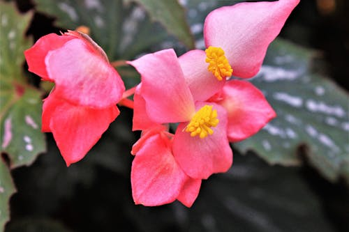

BEGÔNIA

O que é?
As Begônias formam um dos maiores gêneros de plantas do mundo, com mais de 1.800 espécies. Elas são amadas não apenas por suas flores charmosas, mas principalmente por suas folhas ornamentais que apresentam padrões, cores e texturas únicas. Símbolo de cordialidade e gratidão, são ideais para trazer vida a ambientes internos e jardins sombreados.
Como cuidar?
Para manter suas begônias sempre exuberantes, atente-se a estes cuidados:
- Luz: Elas adoram claridade, mas odeiam sol direto! O ideal é a luz filtrada ou meia-sombra para não queimar as folhas.
- Solo: Deve ser leve, rico em matéria orgânica e, acima de tudo, ter uma drenagem perfeita.
- Rega: Água na medida certa! Deixe a terra secar superficialmente antes de regar novamente e evite molhar as folhas para prevenir fungos.
- Umidade: Elas gostam de ambientes úmidos, mas com boa circulação de ar para evitar o apodrecimento do caule.
Curiosidades
- Folhas Assimétricas: Uma característica marcante das begônias é que a base de suas folhas é quase sempre desigual, com um lado maior que o outro.
- Asas de Anjo: Existe uma variedade muito popular chamada "Begônia Asa de Anjo" devido ao formato e às manchas prateadas em suas folhas.
- Flores Comestíveis: Algumas espécies possuem flores com um sabor cítrico e são usadas por chefs na decoração de pratos gourmet.
- Símbolo de Alerta: Em algumas culturas, presentear alguém com uma begônia pode ser um sinal de cautela ou um pedido de desculpas sincero.